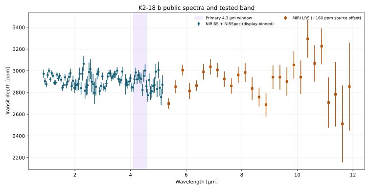
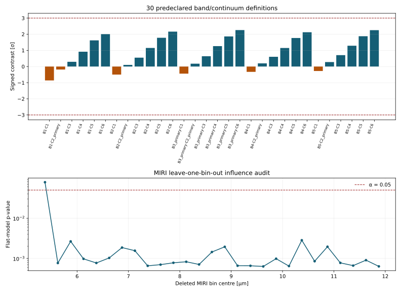
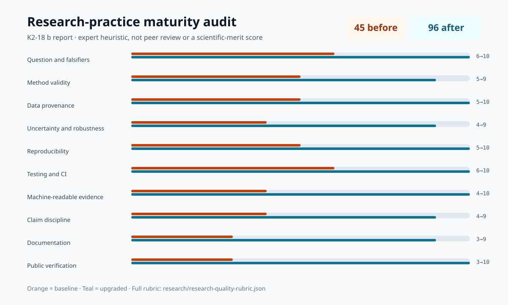

Reproducible robustness audit · JWST NIRISS + NIRSpec + MIRI
K2-18 b
A predeclared stress test of a descriptive 4.3 µm contrast and the influence of individual MIRI bins. The result is intentionally narrower than a retrieval: it measures robustness of two simple statistics, not atmospheric composition, habitability, or life.

AI-generated artist's concept of K2-18 b — not a real photograph. All data and figures in this report come from actual JWST observations (see below).
The planet, in numbers
Versioned 2026-09-23 snapshot from the NASA Exoplanet Archive TAP pscomppars table; exact query and uncertainties are preserved in JSON.
| Radius | 2.37 Earth radii |
|---|---|
| Mass | 8.92 Earth masses |
| Orbital period | 32.9 days |
| Semi-major axis | 0.143 AU |
| Equilibrium temperature | 284 K (within the conventional habitable-zone range, though this says nothing by itself about surface conditions on a sub-Neptune) |
| Host star | K2-18, M-dwarf, Teff = 3457 K, 0.411 Rsun, 0.359 Msun |
| Distance | 38.0 parsecs (~124 light-years) |
| Discovery | 2015, transit photometry (K2 mission) |
Why K2-18 b is contested, not just interesting
Madhusudhan et al. (2023) reported JWST NIRISS SOSS and NIRSpec G395H evidence for methane and carbon dioxide in K2-18 b's atmosphere, consistent with a "hycean" scenario (a liquid-water ocean beneath a H2-rich atmosphere) rather than a scaled-down gas giant. The same team later reported a tentative signal attributed to dimethyl sulfide (DMS), a molecule that on Earth is produced almost exclusively by biological processes — reported explicitly as tentative, not a biosignature detection.
Independent groups have pushed back hard on multiple fronts: some argue the planet's mass and radius are more consistent with a magma-ocean "mini-Neptune" than a temperate ocean world; others argue that combining spectra from different JWST instruments without accounting for small systematic offsets between them can manufacture spurious spectral features — including, potentially, the CO2 signal itself. That second critique is exactly what this repo's data source investigates.

AI-generated 3D-render-style concept of the disputed "hycean" ocean-world scenario — not an actual image of the planet, and not evidence for or against that interpretation.
Two robustness tests, not a retrieval
The earlier report incorrectly called its 4,411-point, 0.852–5.174 µm file a NIRISS+NIRSpec+MIRI spectrum. The exact Zenodo archive member shows that it contains NIRISS+NIRSpec only. This release adds the actual 28-bin MIRI product separately, records both canonical hashes, and prevents that provenance error from recurring in tests.

Negative robustness result. The historical window still gives 4.07±23.16 ppm (0.176σ), but changing only the declared band/continuum boundaries moves the statistic from −0.861σ to +2.258σ. All 30 remain below |3σ|, so this grid contains no robust high-significance window contrast. The 27-bin MIRI flat fit is formally non-flat under diagonal errors (χ²=54.162 for 26 dof), but that conclusion does not survive every single-bin deletion: removing 5.375 µm gives p=0.07832. Neither calculation identifies any molecule, and the missing covariance and reduction-level systematics remain decisive limitations.

What changed in this research release
The upgrade corrects the instrument provenance, freezes the analysis choices before evaluation, exposes every tested configuration, adds deterministic machine-readable evidence and cross-platform hashes, separates claims from limitations, and verifies regeneration in a three-version Python matrix.

Data and method notes
System parameters come from the NASA Exoplanet Archive. Both reduced spectra come from Zenodo record 10.5281/zenodo.16277833. The frozen protocol declares five band and six continuum windows, a |3σ| rule, and a leave-one-bin-out MIRI rule before evaluation. Read the methods, claim ledger, limitations, and machine-readable summary; run python scripts/analyze_spectrum.py to regenerate every result.

AI-generated illustration of the James Webb Space Telescope, whose NIRISS, NIRSpec, and MIRI instruments jointly took the real spectrum used in this report. Not an official mission photograph — see NASA/JWST for real imagery.
References
- Madhusudhan, N. et al., 2023. Carbon-bearing Molecules in a Possible Hycean Atmosphere. The Astrophysical Journal Letters, 956, L13.
- Madhusudhan, N. et al., 2023. Potential Biosignature Detection: Possible Indications of Dimethyl Sulfide in the Atmosphere of K2-18 b. The Astrophysical Journal Letters, 963, L6.
- Zenodo record 10.5281/zenodo.16277833, "Investigating aerosols as a way to reconcile K2-18 b JWST MIRI and NIRISS/NIRSpec observations."
- Wogan, N. et al., 2024. JWST Reveals CH4, CO2, and H2O in a Metal-rich Miscible Atmosphere on a Two-Column Sub-Neptune. The Astrophysical Journal Letters, 963, L7 (alternative interpretation).
- Schmidt, S.J. et al., 2025. A Comprehensive Reanalysis of K2-18 b's JWST NIRISS+NIRSpec Transmission Spectrum. The Astronomical Journal (arXiv:2501.18477).
- Jaziri, A.Y. et al., 2025. Unraveling the non-equilibrium chemistry of the temperate sub-Neptune K2-18 b (arXiv:2507.14983).
- Luque, R. et al., 2025. Insufficient evidence for DMS and DMDS in the atmosphere of K2-18 b (arXiv:2505.13407).
- Jaziri, A.Y. & Drant, T., 2025. Investigating aerosols as a reconciliation mechanism for K2-18 b JWST MIRI and NIRISS/NIRSpec observations (arXiv:2509.13932; data: Zenodo 10.5281/zenodo.16277833).
- NASA Exoplanet Archive, exoplanetarchive.ipac.caltech.edu — system parameters, queried live via TAP.